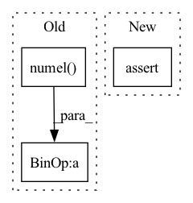

Pattern ID :20340
Before Change
cross_pg_world_size = dist.get_world_size(self._cross_pg)
local_split_and_batch_size = torch.tensor(
[
output.numel() // cross_pg_world_size,
output.shape[0] // cross_pg_world_size,
],
dtype=torch.int64,After Change
self, ctx: ShardedModuleContext, output: torch.Tensor
) -> None:
// Determine the output_dist splits and the all_to_all output size
assert len(output.shape) == 2
local_dim_sum = torch.tensor(
[
output.shape[1],In pattern: SUPERPATTERN
Frequency: 5
Non-data size: 3
Instances Fragment ID: 66018523
Project Name: facebookresearch/torchrec
Commit Name: 4f4986a1e833c5cc557c3f1e3860e22edccff385
Time: 2022-03-10
Author: bigning@fb.com
File Name: torchrec/distributed/tower_sharding.py
M Class Name: ShardedEmbeddingTower
N Class Name: ShardedEmbeddingTower
M Method Name: _create_output_dist(3)
N Method Name: _create_output_dist(3)
M Parent Class: FusedOptimizerModule,Subscript
N Parent Class: FusedOptimizerModule,Subscript
M File Name: torchrec/distributed/tower_sharding.py
N File Name: torchrec/distributed/tower_sharding.py
M Start Line: 273
M End Line: 298
N Start Line: 281
N End Line: 302
Before Change
assert preds.shape == target.shape
CM = confusion_matrix(
preds, target, num_classes=nb_classes, normalize="true")
n_elements = target.numel()
self.correct += torch.mean(torch.diag(CM)) * n_elements
self.total += n_elements
def compute(self):After Change
preds: Predictions from model
target: Ground truth values
assert preds.shape[1] == self.n_classes
preds, target = _input_format_classification(
preds, target, self.threshold)
assert preds.shape == target.shape Fragment ID: 66018522
Project Name: borgwardtlab/togl
Commit Name: cd182053095bd7b2d6271004291dc0c27ef03d15
Time: 2021-01-29
Author: max.horn@bsse.ethz.ch
File Name: topognn/metrics.py
M Class Name: WeightedAccuracy
N Class Name: WeightedAccuracy
M Method Name: update(3)
N Method Name: update(3)
M Parent Class: Metric
N Parent Class: Metric
M File Name: topognn/metrics.py
N File Name: topognn/metrics.py
M Start Line: 40
M End Line: 48
N Start Line: 42
N End Line: 49
Before Change
weights = model_out[weight_name].squeeze()
assert isinstance(weights, torch.Tensor)
// If the model output for the metric is empty, pass it forward
if not (
(torch.numel(labels) == torch.numel(predictions))
and (torch.numel(labels) == torch.numel(weights))
) :
assert is_empty_signals(labels, predictions, weights)
if not is_empty_signals(labels, predictions, weights):After Change
f"{torch.numel(weights)}"
)
else: // For multiclass models, labels.size() = (batch_size), and predictions.size() = (batch_size, number_of_classes)
assert torch.numel(labels) == torch.numel(predictions) / predictions.size()[
-1
] and torch.numel(labels) == torch.numel(weights)
Fragment ID: 66018517
Project Name: facebookresearch/torchrec
Commit Name: 830d042b1eb7b2388541e107279528bfd1ecd2b8
Time: 2022-11-09
Author: mayue@meta.com
File Name: torchrec/metrics/model_utils.py
M Class Name: AnonimousClass
N Class Name: AnonimousClass
M Method Name: parse_model_outputs(4)
N Method Name: parse_model_outputs(4)
M Parent Class:
N Parent Class:
M File Name: torchrec/metrics/model_utils.py
N File Name: torchrec/metrics/model_utils.py
M Start Line: 37
M End Line: 55
N Start Line: 32
N End Line: 57
Before Change
start = 0
for src in src_list:
dest = flat_buffer.narrow(0, start, src.numel())
start = start + src.numel()
dest.data.copy_(src.data)
src.data = dest.data
After Change
swap_in_buffers=[dest],
async_op=False)
else:
assert src.status == PartitionedParamStatus.AVAILABLE, "Partitioned Parm must be avialable here"
if not avoid_copy:
dest.data.copy_(src.data)
src.data = dest.data
Fragment ID: 66018516
Project Name: microsoft/deepspeed
Commit Name: 0d4a54a04d658db40a120bc10c6f1f1a4478f6f1
Time: 2021-04-18
Author: jerasley@microsoft.com
File Name: deepspeed/runtime/zero/stage3.py
M Class Name: FP16_DeepSpeedZeroOptimizer_Stage3
N Class Name: FP16_DeepSpeedZeroOptimizer_Stage3
M Method Name: _move_to_flat_buffer(4)
N Method Name: _move_to_flat_buffer(3)
M Parent Class: object
N Parent Class: object
M File Name: deepspeed/runtime/zero/stage3.py
N File Name: deepspeed/runtime/zero/stage3.py
M Start Line: 872
M End Line: 877
N Start Line: 1007
N End Line: 1038
Before Change
self.idx_shapes = []
istart = 0
for i, p in enumerate(tensors):
ifinish = istart + torch.numel( p)
self.idx_shapes.append((istart, ifinish, p.shape))
istart = ifinish
After Change
def __init__(self, tensors: Sequence[torch.Tensor], batch_dims: Optional[Tuple[int, ...]] = None):
if batch_dims is None:
batch_dims = ()
assert batch_dims is not None
self.batch_dims = batch_dims
nbatch_dims = len(batch_dims)
self.idx_shapes: Tuple[int, int, Tuple[int, ...]] = []
Fragment ID: 66018515
Project Name: xitorch/xitorch
Commit Name: c6f0785664d60d1310778d43f14a3464660ea4d9
Time: 2021-12-30
Author: firman.kasim@gmail.com
File Name: xitorch/_utils/misc.py
M Class Name: TensorPacker
N Class Name: TensorPacker
M Method Name: __init__(3)
N Method Name: __init__(2)
M Parent Class: object
N Parent Class: object
M File Name: xitorch/_utils/misc.py
N File Name: xitorch/_utils/misc.py
M Start Line: 98
M End Line: 103
N Start Line: 102
N End Line: 113